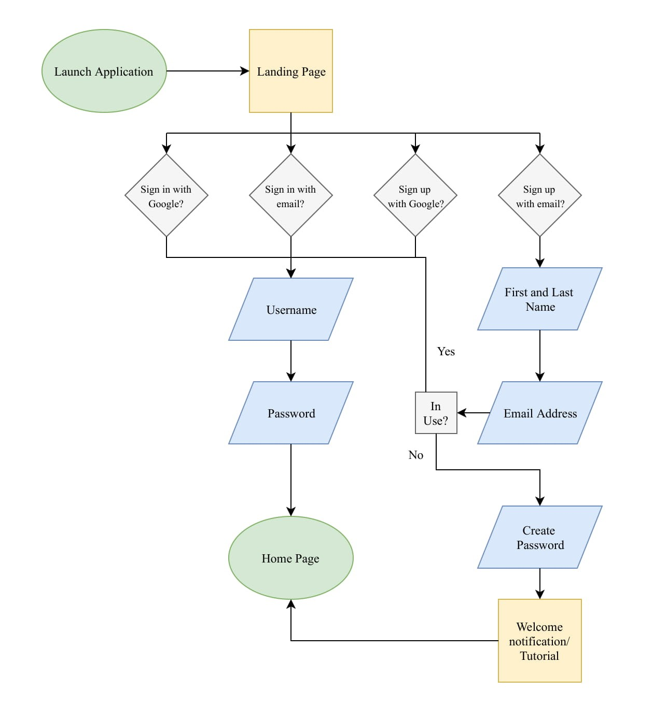
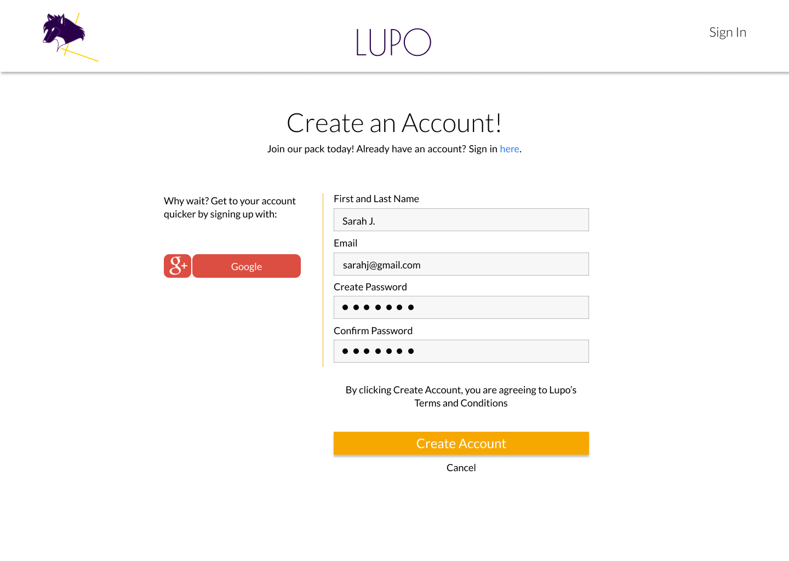
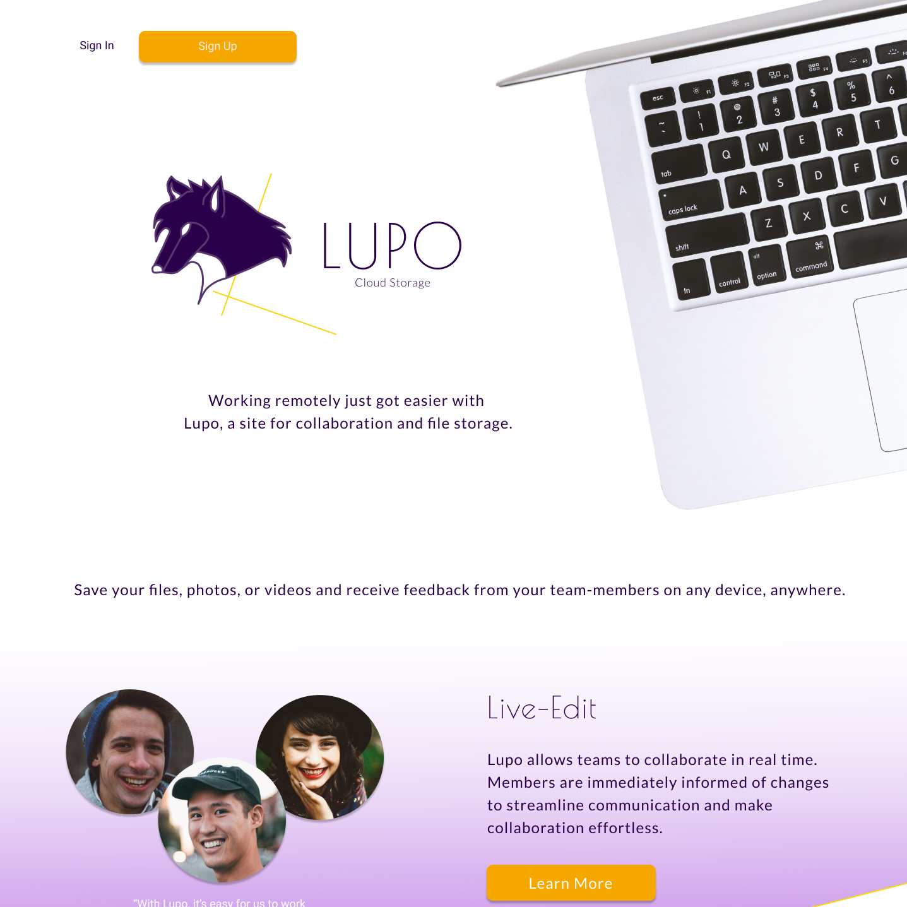

Through individuals like John and Kara, Lupo developed a purpose and overarching goals:
Design Roles
Sole Designer
- UX Design
- Visual Design
- Brand & Identity
Duration
- 5 weeks
Deliverables
- User Surveys
- Personas
- Competitive Analysis
- Concept & identity
- User Stories
- User Flows
- Prototype
- A/B and Usability Testing
- Visual Design
Tools & Software
- Adobe Illustrator
- Figma
- InVision
- Draw.io
Competitive Analysis


Data Storage Options
Data storage ranges broadly from 15 GB of free data to only 2 GB. Free subscriptions are generally limited because of the focus on working professionals/businesses.
Collaboration
Free subscriptions often limit collaborative options for users. Even under paid subscriptions, collaborative options are not very extensive.
Consistency
To take advantage of collaboration, users have to switch into different platforms which makes it confusing and cumbersome. Some features are only available on the web.
User Research
To understand what users are looking for in cloud storage, I conducted a survey that was posted online through various social media platforms and public forums. I also wanted to better understand how users viewed major cloud storage sites like Google Drive and Dropbox; what did they think was missing?
Survey results indicated collaboration as one of the key reasons participants use cloud storage, emphasizing the importance of it as a feature.
Do Users Collaborate?
Who Users Collaborate With
User Personas
To better understand the needs of users, I then conducted two interviews from survey participants:
Kara
35 | IT Professional
Motivation
Free options for cloud storage
Fair pricing options
Frustration
Cost
Untrustworthy
John
43 | Teacher
Motivation
Connect with tech-focused generation of students
Better support students
Frustration
No audio/video option
Sharing cumbersome
Kara
35 | IT Professional
Motivation
Free options for cloud storage
Fair pricing options
Frustration
Cost
Untrustworthy
John
43 | Teacher
Motivation
Connect with tech-focused generation of students
Better support students
Frustration
No audio/video option
Sharing cumbersome
User Flows
Onboarding
Add Collaborators

Wireframes
Landing Page


Account Settings


User Home Page


Branding


Lupo capitalizes on the lack of brand symbols within the cloud storage market to distinguish itself. With it’s focus on collaboration, innovation, and reliability, a familiar cultural representation is that of a wolf. Culturally, these animals are admired for their tenacity and ability to band together for a common goal; they are often seen as majestic animals with a keen intelligence, which are all traits Lupo sees in it’s users as collaborators on the platform.


Poiret One
Lato
Poiret One was chosen as the headline typeface and Lato as the body typeface. Poiret One has very clean lines with very strong geometric shapes that is in alignment with the professional purpose of the site.
#2A004A
#4E008A
#F7A800
#FEFEFA
#FFF600
#B067DF
I chose purple as the core color for Lupo with yellow and orange as supporting colors. Yellow is often associated with happiness and energy; orange is said to stimulate confidence and mental activity. And finally, purple is historically associated with royalty from the Roman Empire. The use of purple as a primary brand identifier corroborates its association with wisdom, creativity, and sophistication.
Testing
I conducted A/B preference tests on Usabilityhub and received the following results:


Option A- 20%
Option B- 80%


Option A- 40%
Option B- 60%


Option A- 25%
Option B- 75%
1
Static- users preferred static comments to a retractable display.
2
Color- the original use of the color scheme was jarring and distracting to users during the onboarding process.
3
F-Shape- the original landing page had poor visual hierarchy, misalignment, and no clear focal point. By incorporating the f-shape, the CTA was more clear and it reduced users' cognitive load.
Testing participants also provided me with important feedback concerning my mockups that led to other general shifts in the design.
“I think the files on the home page should be the same size”
“The purple navigation is a bit too feminine”


Along with preference tests, I conducted a few more usability tests before completing my final design. Usability tests generated some important additional information that users preferred to see:
1
Incentivizing upgrade- users indicated they would like to see information about upgrading plans on the account settings page. Because pricing in isolation can act as a deterrent to upgrading a plan, I decided to incentivize upgrades by providing the data associated with the upgraded plan.
2
Team Lead- users indicated that within groups there should be a designated leader.
3
Collaboration- for a platform that focuses on collaboration, users indicated they would like to see notification about the last document edited within a group.
Option A- 20%
Option B- 80%
1
Static- users preferred static comments to a retractable display.
Option A- 40%
Option B- 60%
2
Color- the original use of the color scheme was jarring and distracting to users during the onboarding process.
Option A- 25%
Option B- 75%
3
F-Shape- the original landing page had poor visual hierarchy, misalignment, and no clear focal point. By incorporating the f-shape, the CTA was more clear and it reduced users' cognitive load.
Testing participants also provided me with important feedback concerning my mockups that led to other general shifts in the design.
“I think the files on the home page should be the same size”
“The purple navigation is a bit too feminine”
Along with preference tests, I conducted a few more usability tests before completing my final design. Usability tests generated some important additional information that users preferred to see:
1
Incentivizing upgrade- users indicated they would like to see information about upgrading plans on the account settings page. Because pricing in isolation can act as a deterrent to upgrading a plan, I decided to incentivize upgrades by providing the data associated with the upgraded plan.
2
Team Lead- users indicated that within groups there should be a designated leader.
3
Collaboration- for a platform that focuses on collaboration, users indicated they would like to see notification about the last document edited within a group.
Final Design
Lupo establishes trust with the user by visibly displaying pricing content on the landing page

Lupo provides customizable features, such as tags, folders, and favorites. Users also have the ability to customize their dashboard

Lupo informs users of the last document and date they worked on a file with another. Users can quickly review any updates and are also given notifications in real-time.

Lupo users can create, share, and edit files together. They can add commentary in the form of audio, video, or text.

Final Thoughts
While there were many triumphs in the completion of this project primarily because of user feedback, market research, and user testing, there were also some lessons I learned as a designer. One of my main mistakes working on this project was my inclination to change direction based on an individual user’s opinion without carefully considering whether their opinion was an outlier or representative of the norm. Moving forward, I would be more persistent in clarifying the distinction so as not to make arbitrary changes to a design at the expense of other users.
Furthermore, I think it is important that I spend more time further developing my sketches. When starting a new project, my excitement often drives me to want to begin designing the interface as soon as possible. However, especially in larger projects, it is very important to fully explore all possible alternatives before deciding on a final design. I think had I worked slower in the beginning, there wouldn’t have been a need for as many small iterations from simple mistakes or gaps in user input. Moving forward, my main goal as a designer will be to further develop my patience in the Strategy phase.